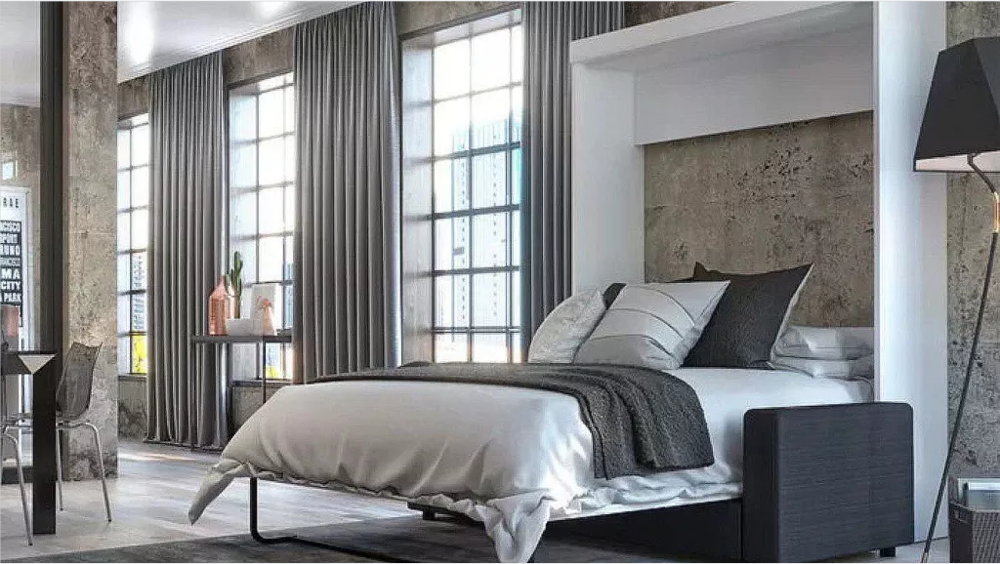

How wide should curtain panels be? Knowhow for the perfect fit.
Growing potatoes in a bucket is simple, space-saving and perfect for beginners – here's how to do it

I am a style editor, and these 7 undesirable trends are dating your interiors – here's what to use instead
About Homes & Gardens: who we are, what we do, and how to contact us
As the UK’s first-ever home interest magazine, Homes & Gardens has been shaping British style for 100 years. In 2022, we were voted Best Online Brand: Consumer at the Digital Publishing Awards.
Our core pillars are inspirational interiors, stylish decorating, beautiful gardens and fascinating stories. With the values of timeless style and considered elegance at our heart, we show an affection for heritage whilst also championing the future, from emerging designers to latest trends. Homes & Gardens' Wikipedia page(opens in new tab) covers some of our history. You can also you can join our social community for the latest news, moments of seasonal beauty and a glimpse behind the scenes; follow us on Twitter(opens in new tab), Facebook(opens in new tab) and Instagram(opens in new tab).
Every month, the print edition features fabulous houses, seasonal ideas, desirable products, designer sources and insider insight. You can subscribe to Homes & Gardens(opens in new tab) to have it delivered to your door every month.
The Homes & Gardens website brings all our beautiful content online, with a focus on stunning room ideas, expert advice from interior designers, architects and design professionals, and more practical expertise, too, on caring for and improving your home. Our website is updated and added to daily and we're delighted to welcome more than 6 million readers monthly.
Of course, we've assembled a cracking team of experts in their fields to deliver all this stunning inspiration to you, and we'd love to introduce them. Their contact details are below, too.